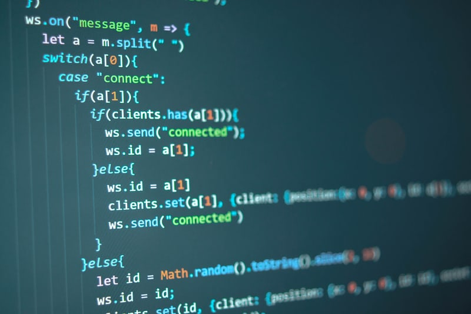

이영범 지음
My name is Yeong-Bum.I introduce JavaScript
JavaScript often abbreviated as JS, is a programming language that conforms to the ECMAScript specification.[1] JavaScript is high-level, often just-in-time compiled, and multi-paradigm. It has curly-bracket syntax, dynamic typing, prototype-based object-orientation, and first-class functions. Alongside HTML and CSS, JavaScript is one of the core technologies of the World Wide Web.
[2] JavaScript enables interactive web pages and is an essential part of web applications. The vast majority of websites use it for client-side page behavior, and all major web browsers have a dedicated JavaScript engine to execute it.

As a multi-paradigm language, JavaScript supports event-driven, functional, and imperative programming styles. It has application programming interfaces (APIs) for working with text, dates, regular expressions, standard data structures, and the Document Object Model (DOM).